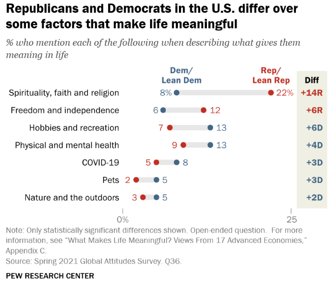
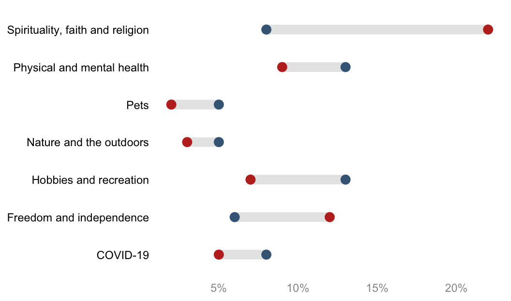
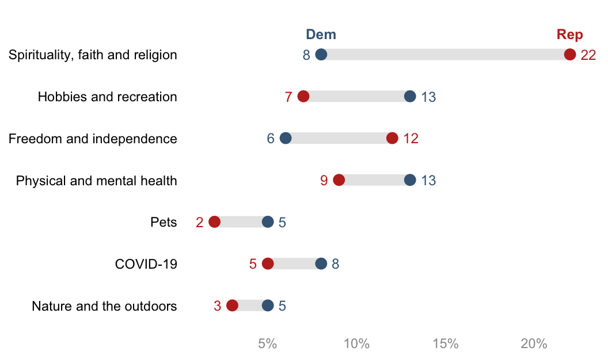
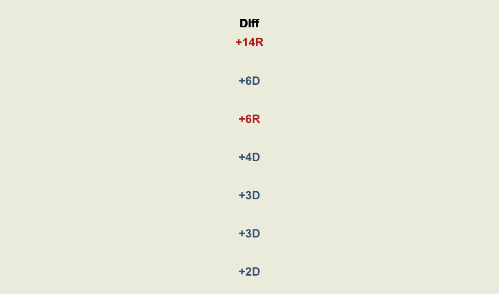
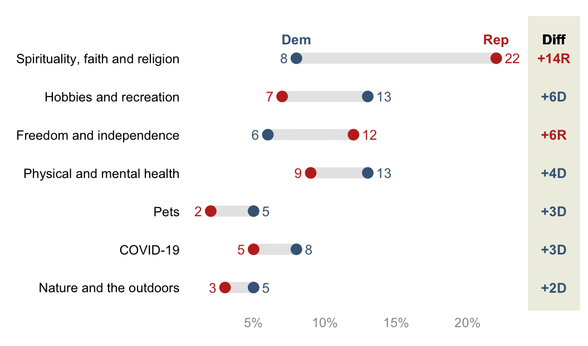

About
This tutorial by Fred Duong will show you how to create dumbbell charts with gap columns, similar to the charts you might have seen from Pew and YouGov.
The original dumbbell chart built by the Pew Research Center is shown below:

We can get pretty close to the chart with ggplot2() (and
with a lot more tweaking that we won’t go into here, we could probably
exactly recreate the chart!)
Here is the final figure that we’ll create.

But first, let’s create the basic figure!
Libraries
Let’s use the tidyverse that includes
ggplot2 and `patchwork`` to combine plots.
library(tidyverse)
library(patchwork) #to combine plotsData Creation
First, we create a tibble that contains the data from the figure.
raw=tibble(
labels=c(
"Spirituality, faith and religion",
"Freedom and independence",
"Hobbies and recreation",
"Physical and mental health",
"COVID-19",
"Pets",
"Nature and the outdoors"),
Dem=c(8,6,13,13,8,5,5),
Rep=c(22,12,7,9,5,2,3)
)
df=rawBasic Figure
From this tibble, it’s easy to create the base figure. Though you can
keep the data in wide format, I find it simpler to wrangle the data
into long format first thanks to the
pivot_longer function.
df_long=df %>%
pivot_longer(-labels)Now let’s build the plot:
df_long %>%
ggplot(aes(x=value,y=labels)) +
geom_line(aes(group=labels), color="#E7E7E7", linewidth=3.5) +
# note that linewidth is a little larger than the point size
# so that the line matches the height of the point. why is it
# like that? i don't really know
geom_point(aes(color=name), size=3) +
theme_minimal() +
theme(legend.position = "none",
axis.text.y = element_text(color="black"),
axis.text.x = element_text(color="#989898"),
axis.title = element_blank(),
panel.grid = element_blank()
) +
scale_color_manual(values=c("#436685", "#BF2F24"))+
scale_x_continuous(labels = scales::percent_format(scale = 1))
That’s it! Not a ton of code! But, you’ll notice that this is missing a few key formatting features from the original Pew figure:
-
The y-axis is not sorted. By default,
ggplot()alphabetizes character vectors that are used for the axes. Then, it displays the y-axis values reverse alphabetized. We can manually sort this however we want, but sorting by descending gaps is common. To do this, we will compute the gaps, and then turn the y-axis labels into a factor so thatggplot()respects the order. -
There are no text labels. Some dumbbell figures have data callouts to the left and right, and some have them underneath or above the points. When it’s to the left and right, it’s a little complicated to implement. There are two issues: 1) Because Democrats and Republicans might switch orders in terms of which is the higher value, you can’t rely just the categories themselves to decide which is left and right (Democrats won’t always be the lower value, for example); and 2) by default, positioning the data callouts will place them right on top of the points. But we will want to nudge the data callouts either to the left or to the right of the points. To solve this, we will create a variable that assesses the maximum value per label (or minimum) to assign the left and right callouts. Then, we can either use two
geom_text()s, with each one usingfilter()on the data to only show the maximum or not the maximum and using thecoloraesthetic set to political party, or–more simply–use onegeom_text()that uses anif_else()statement to assign that conditions on if the value == the maximum value. I’ll show the latter case. -
There is no color legend for the points. By default,
ggplotwill attempt to put a typical legend for your color aesthetic that is placed to the right. You’ll see above I turned this off intheme(). It can be much more readable to place the legend above the actual points themselves, as you see from the Pew figure. -
There is no gap column. The best way I can figure out how to do this is to create a second
ggplotobject, and usepatchworkto stitch it together with the main plot.
The complete figure will solve all four issues, but this requires a lot more tweaking. The complete figure will consist of the main dumbbell figure and a gap figure.
Clean Dumbbell plot (left part)
A few additional data wrangling steps are necessary to complete the final figure:
df=raw %>% # raw is just the generated data
# compute the gap
mutate(gap=Rep-Dem) %>%
# find the maximum value by label
group_by(labels) %>%
mutate(max=max(Dem, Rep)) %>%
ungroup() %>%
# sort the labels by gap value
# note that its absolute value of gap
mutate(labels=forcats::fct_reorder(labels, abs(gap)))
# make into long format for easier plotting
df_long=df %>%
pivot_longer(
c(Dem,Rep)
)
df df_long %>% head()The left hand side part of the final plot can then be built as follow:
# set a custom nudge value
nudge_value=.6
p_main=
df_long %>%
# the following 3 lines of code are the same
ggplot(aes(x=value,y=labels)) +
geom_line(aes(group=labels), color="#E7E7E7", linewidth=3.5) +
geom_point(aes(color=name), size=3) +
# but we want geom_text for the data callouts and the legend
# data callout
geom_text(aes(label=value, color=name),
size=3.25,
nudge_x=if_else(
df_long$value==df_long$max, # if it's the larger value...
nudge_value, # move it to the right of the point
-nudge_value), # otherwise, move it to the left of the point
hjust=if_else(
df_long$value==df_long$max, #if it's the larger value
0, # left justify
1),# otherwise, right justify
)+
# legend
geom_text(aes(label=name, color=name),
data=. %>% filter(gap==max(gap)),
nudge_y =.5,
fontface="bold",
size=3.25)+
theme_minimal() +
theme(legend.position = "none",
axis.text.y = element_text(color="black"),
axis.text.x = element_text(color="#989898"),
axis.title = element_blank(),
panel.grid = element_blank()
) +
labs(x="%",y=NULL) +
scale_color_manual(values=c("#436685", "#BF2F24")) +
#extend the y-axis otherwise the legend is cut off
coord_cartesian(ylim=c(1, 7.5)) +
#display percentages with % appended
scale_x_continuous(labels = scales::percent_format(scale = 1))
p_main
Gap section (right part)
The Gap figure on the right hand side must be created too. Pew formats the gap values in a particular way:
Colors by party
Adds “+” to the beginning of the gap value if positive
Adds “R” or “D” to the end of the gap value
Let’s do that!
df_gap=
df %>% # note i am using df and not df_long
mutate(
label=fct_reorder(labels, abs(gap)), #order label by descending gaps
# we need a column for the party with the max value
gap_party_max=if_else(
Rep==max,
"R",
"D"
),
# format gap values
gap_label=
paste0("+", abs(gap), gap_party_max) %>%
fct_inorder() #turns into factor to bake in the order
)
df_gapAnd then the plot:
p_gap=
df_gap %>%
ggplot(aes(x=gap,y=labels)) +
geom_text(aes(x=0, label=gap_label, color=gap_party_max),
fontface="bold",
size=3.25) +
geom_text(aes(x=0, y=7), # 7 because that's the # of y-axis values
label="Diff",
nudge_y =.5, # match the nudge value of the main plot legend
fontface="bold",
size=3.25) +
theme_void() +
coord_cartesian(xlim = c(-.05, 0.05),
ylim=c(1,7.5) # needs to match main plot
)+
theme(
plot.margin = margin(l=0, r=0, b=0, t=0), #otherwise it adds too much space
panel.background = element_rect(fill="#EFEFE3", color="#EFEFE3"),
legend.position = "none"
)+
scale_color_manual(values=c("#436685", "#BF2F24"))
p_gap
Combine figures
Use the package patchwork to put together your final
figure. You’ll need to play around with plot_layout() a
bit to get your figures to fit together how you want.
p_whole=
# syntax from `patchwork`
p_main + p_gap + plot_layout(design=
c(
area(l=0, r=45, t=0, b=1), # defines the main figure area
area(l=46, r=52, t=0, b=1) # defines the gap figure area
))
p_whole
The End
And there it is! To summarize: making the basic figure is quite easy, but adding all the little extras to make it more readable takes a lot more tweaking.
Some final notes:
-
If you look at the original Pew figure, they sort it by party, and then gap. There is not a built-in tidyverse way to do this, but
reorder_within()from the r packagetidytextmight be able to. See https://juliasilge.com/blog/reorder-within. -
To pull colors from existing figures, I use a free color picker program for Windows called Color Cop.
-
Your y-axis labels might be long statements, which don’t automatically wrap and then push the plot area so that it’s more narrow. I find it helpful to use
str_wrap()for those cases. See this tutorial. -
The dumbbell chart is a variation on the more simple lollipop chart, which only has one datapoint per row. You can find a different implementation of a dumbbell chart on the wonderful resource R Graph Gallery: https://r-graph-gallery.com/web-extended-dumbbell-plot-ggplot2.html.
-
This was inspired by this tweet from Andy Luttrell asking for help with the name of the type of chart and how to create it. On the name: it’s called a dumbbell chart because the gap line, if unmodified, is thin. But just as often you see the lines as thick as the points, and then they don’t really look like dumbbells anymore. Maybe it should be called a gap chart.
-
I took the
patchworkapproach from Kat Hoffman, who used it for forest plots created with ggplot: https://www.khstats.com/blog/forest-plots. -
If you have feedback or questions or just want to connect, you can find my contact info on my webpage: fuhred.com.
Thank you for reading! I hope you had as much fun following along as I did making this! – Fred Duong